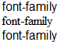

RY1001: IE6 IE7 IE8(Q) 会自动修复 'font-family' 特性的值是由一个引号包括了整个字体家族时的错误书写的代码
标准参考
问题描述
在 IE6 IE7 IE8(Q) 中，当使用一对引号将所有的字体家族名连同分割的逗号全部包含，浏览器会修复此定义错误，多余的引号会被忽略。
造成的影响
各浏览器内字体不一致。
受影响的浏览器
| IE6 IE7 IE8(Q) | 当使用一对引号将所有的字体家族名连同分割的逗号全部包含，浏览器会修复此定义错误，多余的引号会被忽略。 |
|---|
问题分析
'font-family' 的值格式为：
[[ family-name | generic-family ] [, family-name | generic-family ]* ] | inherit
上面的格式代表，font-family 的值可由多个 family-name（字体家族名）及 generic-family（通用家族）构成，中间使用逗号 "," 分割。
例如，包含英文单词并混合了数学符号的文本可能需要两个字体的字体集，一个包含拉丁字母和数字，另外一个包含数学符号。如果文本可能包含拉丁字母，日语字母和数学符号，下面的例子给出一个合适的字体集：
BODY { font-family: Baskerville, "Heisi Mincho W3", Symbol, serif }
"Baskerville" 字体（只包含拉丁字母的字体）中包含的字型将提供可用的字型，日文字型将来自 "Heisi Mincho W3" ，而数学符号字型来自 "Symbol"。其它的将来自通用字体家族 'serif'。
对于 family-name（字体家族名），上例中，"Baskerville"，"Heisi Mincho W3" 和 "Symbol" 是字体家族。包含空白的字体名应该用引号分割。如果省略了引号，字体名前或后的任何空白将被忽略，而字体名内的任何空白字符序列将被转换为一个空格。
测试代码：
<style>
#d1 {font-family: "Arial, Tahoma"}
#d2 {font-family: "Arial, Tahoma", "Times New Roman"}
#d3 {font-family: Arial, Tahoma, "Times New Roman"}
</style>
<div id="d1">font-family</div>
<div id="d2">font-family</div>
<div id="d3">font-family</div>
以上代码分为三组，区别在 DIV 元素的 CSS 定义中 font-family 的值：
- 1. 第一组：全部字体家族名被一对引号包含；
- 2. 第二组：前两个字体家族名被一对引号包含后，与第三个用逗号分割；
- 3. 第三组：完全遵照 W3C 规范规定的写法。
根据 W3C CSS2.1 规范对 font-family 的规定，被引号包含的字符串将被认为是一个字体家族，所以上面三组中，DIV 元素的 font-family 分别有一个、两个、三个字体家族定义。
以上代码在不同的浏览器环境中的表现：
| IE6 IE7 IE8(Q) | IE8(S) Firefox Safari Chrome |
|---|---|
|  |  |
实际应用的字体家族：
|
实际应用的字体家族：
|
可见：
- 在 IE6 IE7 IE8(Q) 中，
- 对于第一组，浏览器忽略了最外面的引号，CSS 代码被修复为：‘font-family: Arial, Tahoma’ ，则 DIV 被应用上字体 Arial；
- 对于第二组，"Arial, Tahoma" 后出现了另一个字体家族 "Times New Roman" ，浏览器此时没有对包含 "Arial, Tahoma" 的引号做修复，而是将 "Arial, Tahoma" 看做一种字体家族，由于系统中并没有此字体，所以DIV被应用上字体 "Times New Roman" ；
-
在其他浏览器中，
- 对于第一组，浏览器将整个引号包含的 "Arial, Tahoma" 当做是一种字体家族，而由于系统中并没有此字体，除此之外再没有定义其他有效的字体家族名称，所以 DIV 被应用上各浏览器的默认字体。
- 对于第二组，处理方式同上面 IE6 IE7 IE8(Q) 中。
解决方案
这是由于疏忽笔误造成的错误，首先应按照 W3C 规范中的标准写法定义 'font-family' 。而不能利用浏览器对错误代码的容错机制。
参见
知识库
相关问题
测试环境
| 操作系统版本: | Windows 7 Ultimate build 7600 |
|---|---|
| 浏览器版本: | IE6 IE7 IE8 Firefox 3.6 Chrome 4.0.302.3 dev Safari 4.0.4 |
| 测试页面: | |
| 本文更新时间: | 2010-05-19 |
关键字
font-family 字体家族 font property quotation mark